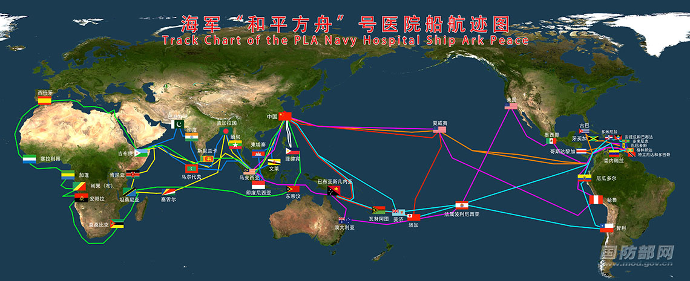
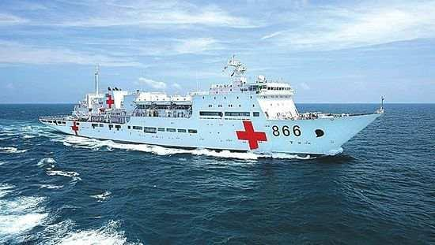

原标题："和平方舟"号医院船——舰行万里守卫和平的友谊使者
来源:国防部网站
11月25日下午，国防部举行例行记者会，国防部新闻局局长、国防部新闻发言人吴谦大校答记者问。
记者：近日，电视剧《和平之舟》在中央电视台热播，受到广泛好评。该剧根据海军“和平方舟”号医院船执行国际人道主义医疗服务和救援任务先进事迹改编。请进一步介绍“和平方舟”号医院船近年来执行医疗救援任务的主要情况和生动故事。
吴谦：你提到这部电视剧我刚刚看过，感到这是一部选材真实、富有感染力的作品。海军“和平方舟”号医院船入列以来，勇闯大洋锤炼远海卫勤保障能力，远赴海外开展人道主义医疗服务，先后9次走出国门，航行24万余海里，服务43个国家和地区、23万余人次，赢得国内外高度赞誉，被誉为“舰行万里守卫和平的友谊使者”。
一是彰显中国理念。“和平方舟”怀仁扬帆，远航世界，是中国海军为世界提供公共安全产品的见证，也是中国坚定不移走和平发展道路的生动缩影。和平发展不仅是中国的发展方式和道路选择，更是世界各国人民的共同心愿。
二是承载中国道义。在播撒大爱的航道上，“和平方舟”号医院船始终把“生命至上”举过头顶，大力弘扬“人道、博爱、奉献”的红十字精神，在世界版图上绘出“心形”航迹，成为世界人民心中的“生命之舟”。
三是播撒中国善意。志合者，不以山海为远。“和平方舟”在执行“和谐使命”任务中，积极与外军开展国际人道主义联合救灾演练，同外方医疗机构开展多国联合巡诊就诊，为到访国医护人员举办医学和护理讲座，多渠道多层面深化医学交流合作，体现了国家不分大小、贫富、强弱，都是国际社会的平等成员。
四是传递中国魅力。深蓝航程上，“和平方舟”号医院船架起了一道文化交流的彩虹桥，向世界展示出一个真实、立体、全面的中国。入列以来，“和平方舟”号医院船先后接待外方军民登船参观3万余人次，拜会和接待国家元首、军政高层230余人次。在医院船所到访的43个国家中，当地民众都以不同形式，表达着心中感激。在肯尼亚，“和平方舟”驶离时，码头上出现了一支插着五星红旗的摩托车队，足有一公里长，沿着医院船航行的方向紧追不舍，久久不愿离去。

白色船身，身披“红十字”，静静地停靠在舟山军港。这是海军“和平方舟”号医院船，是中国专门为海上医疗救护“量身定做”的专业大型医院船。
2008年“和平方舟”号医院船正式入列，主要担负战时海上伤病员医疗救护与后送任务，平时则为我国驻岛礁居民和部队官兵巡诊，并执行国际人道主义医疗服务、重大灾害应急治疗救援和对外军事医学交流与合作等任务。
2010年8月，“和平方舟”号医院船首次走出国门，赴亚丁湾海域及吉布提、肯尼亚、坦桑尼亚、塞舌尔、孟加拉国等亚非五国，执行“和谐使命—2010”医疗服务任务。每到一地，主平台诊疗、社区巡诊、医学研讨、孤儿院联谊……医院船满载技术精湛的中国军医，肩负构建海洋命运共同体的使命，为和平、友谊与健康而来。
在茫茫大海之上，只要这艘“大白船”出现，就如同看到了生命延续的希望。入列以来，“和平方舟”号医院船勇闯大洋锤炼远海卫勤保障能力，远赴海外开展人道主义医疗服务，在波峰浪谷中砥砺强军之志，在卫护士兵中增强打赢本领，在救死扶伤中传递和平理念，极大提升了备战打仗水平，有力服务了国家政治外交大局，赢得了国内外高度赞誉。它是名副其实的生命之舟、和平之舟、友谊之舟、文化之舟。

习主席指出，我们人类居住的这个蓝色星球，不是被海洋分割成了各个孤岛，而是被海洋连结成了命运共同体，各国人民安危与共。中国海军愿与各国海上力量共同努力，为推动构建海洋命运共同体作出新的更大的贡献。